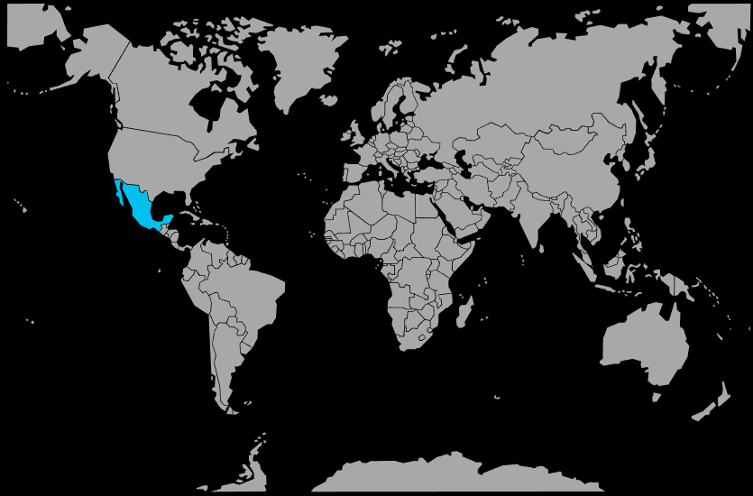

Systématique
- Ordre : Cichliformes
- Famille : Cichlidae
- Sous-famille : Cichlinae
- Tribu : Heroini
- Genre : Maskaheros
- Espèce : Maskaheros argenteus
Maskaheros argenteus est un grand cichlidé d’Amérique centrale, massif, au corps clair ponctué de taches sombres, souvent appelé cichlidé argent.
Les adultes peuvent dépasser 25 cm, les mâles étant plus grands et plus robustes que les femelles, avec parfois une bosse frontale marquée.
Ce cichlidé vit surtout à mi‑profondeur et près du fond, où il occupe et défend un territoire; il peut se montrer très territorial, surtout en période de reproduction, vis‑à‑vis des congénères ou d’autres grands cichlidés occupant la même zone.
La cohabitation n’est possible qu’avec d’autres poissons robustes et de grande taille, dans de très grands volumes offrant de nombreuses caches minérales et des lignes de vue brisées afin de limiter les confrontations directes.
Reproduction : cichlidé pondeur sur substrat découvert; le couple nettoie une pierre ou une zone du décor, y dépose les œufs puis assure une garde vigilante des œufs et des alevins.
En aquarium, la reproduction reste exigeante et nécessite généralement un couple bien formé, un bac très spacieux, une eau de bonne qualité et un décor offrant un territoire clairement définissable pour le couple.
Dimorphisme sexuel : mâle plus grand, plus massif, avec couleurs plus marquées et nageoires dorsale et anale plus pointues; femelle plus trapue, au ventre plus rebondi en période de ponte.
Biotope : rivières lentes et zones calmes du bassin de l’Usumacinta au Mexique, sur fonds sableux ou boueux, avec pierres, rochers et bois immergés.
Répartition
Origine naturelle :
- Amérique centrale, endémique du bassin de la rivière Usumacinta, sur le versant atlantique des côtes mexicaines.
- Zones calmes, bras morts et secteurs à courant faible à modéré, riches en roches, branches et refuges.
L’espèce affectionne des eaux relativement claires à légèrement troubles, avec une bonne oxygénation et de larges surfaces au sol.
Paramètres de maintenance
Température : 22 à 28 °C.
pH : 7,0 à 8,0, eau neutre à légèrement alcaline.
GH : 8 à 20 °dGH, eau moyenne à dure.
Courant : faible à modéré, avec une filtration puissante et stable pour gérer la charge organique d’un grand cichlidé.
Volume conseillé : ≥ 600 L pour un couple, davantage en cas de cohabitation avec d’autres grands cichlidés.
Régime alimentaire
Régime : carnivore opportuniste; accepte granulés et sticks pour grands cichlidés, complétés par des nourritures congelées ou fraîches (crevettes, moules, morceaux de poisson), avec quelques apports végétaux.
Une alimentation variée distribuée avec modération, associée à de gros changements d’eau réguliers, est indispensable pour maintenir ce poisson massif en bonne santé et limiter la pollution du bac.